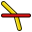
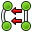

Верстак PartDesign предоставляет инструменты для моделирования сложных твердотельных деталей и базируется на Feature editing methodology для создания single contiguous solid. Он неразрывно связан с верстаком Sketcher.
Что значит единое монолитное тело? Это элемент вроде литья или чего-то выточенного из единого блока металла. Если он включает гвозди, винты, клей или пайку, это не единое монолитное тело. Например, PartDesign не может использоваться для моделирования деревянных стульев, но может использоваться для моделирования его компонентов (ножек, планок, сидений и так далее). Компоненты собираются с помощью верстаков Assembly, Part или Draft.

Базовый процесс
Эскиз это строительный блок для создания и редактирования твердых тел. Рабочий процесс может быть описан так: сначала создаётся эскиз, содержащий двумерную геометрию, затем к нему применяют инструменты создания твёрдых тел. Среди этих инструментов сейчас имеются:
-
 Выдавливание выдавливает эскиз
Выдавливание выдавливает эскиз -
 Карман создаёт выемку в существующем теле
Карман создаёт выемку в существующем теле -
 Вращение создаёт твёрдое тело вращением эскиза вокруг оси
Вращение создаёт твёрдое тело вращением эскиза вокруг оси -
 Паз создаёт паз в существующем твёрдом теле
Паз создаёт паз в существующем твёрдом теле
В будущих выпусках запланированы и другие инструменты.
Важнейшая концепция верстака Workbench это поддержка эскизирования. Эскизы могут быть созданы на стандартных плоскостях (XY, XZ, YZ и параллельные им) или на плоских гранях существующих тел. В последнем случае существующее тело становится подложкой эскиза. Некоторые инструменты будут работать только с эскизами, которые имеют подложку, например, Карман - без подложки будет не откуда убирать материал!
После создания твердотельной геометрии она может быть модифицирована с помощью фасок или скругления, или преобразована, например, отражена или размножена.
Верстак PartDesign предназначен для создания единого, неразборного твердого тела. Для нескольких тел можно использовать верстак Assembly
Когда мы создаём модель в верстаке PartDesign, каждая черта получает форму последнего и что-то добавляет или убирает, создавая линейные зависимости от четы к черте по мере создания модели. Например, способ "вырезания" не только вырезает само отверстие, but the whole part with the cut. Когда новая черта добавлена в модель, FreeCAD выключает видимость старых черт. Пользователю обычно требуется иметь только новейшие черты модели видимыми, поскольку прочие фазы модели перекрывают одна другие, и в этом случае отверстия будут заполнены предыдущими чертами моделей, которые ещё не имеют этих отверстий.
Для переключения видимости объекта, выберите его в иерархическом древе проекта и нажмите пробел. Обычно все, кроме последних элементов в иерархическом древе должны быть серыми и не отображаться в трёхмерном окне.
Инструменты
Инструменты верстака PartDesign располагается в меню Part Design, которое появляется при загрузке модуля Part Design.
Они включают инструменты верстака Sketcher, поскольку модуль Part Design сильно зависит от него.
Инструменты Sketcher
Геометрия Sketcher
Инструменты создания объектов.
-
 Создать точку: Рисует точку.
Создать точку: Рисует точку. -
 Создать линию: Рисует отрезок через две точки
Создать линию: Рисует отрезок через две точки -
 Создать дугу по центру: Рисует сегмент дуги по заданным центру, радиусу, начальному и конечному углу
Создать дугу по центру: Рисует сегмент дуги по заданным центру, радиусу, начальному и конечному углу -
 Создать дугу по трём точкам: Рисует сегмент дуги по двум конечным точкам и дополнительной точке окружности.
Создать дугу по трём точкам: Рисует сегмент дуги по двум конечным точкам и дополнительной точке окружности. -
 Создать окружность: Рисует окружность по центру и радиусу
Создать окружность: Рисует окружность по центру и радиусу -
 Создать окружность по трём точкам : Создать окружность указанием трёх точек на ней.
Создать окружность по трём точкам : Создать окружность указанием трёх точек на ней. -
 Сечения конуса:
Сечения конуса:
-
 Ellipse by center : Draws an ellipse by center point, major radius point and minor radius point. (v0.15)
Ellipse by center : Draws an ellipse by center point, major radius point and minor radius point. (v0.15) -
 Ellipse by 3 points : Draws an ellipse by major diameter (2 points) and minor radius point. (v0.15)
Ellipse by 3 points : Draws an ellipse by major diameter (2 points) and minor radius point. (v0.15) -
 Arc of ellipse : Draws an arc of ellipse by center point, major radius point, starting point and ending point. (v0.15)
Arc of ellipse : Draws an arc of ellipse by center point, major radius point, starting point and ending point. (v0.15)
-
-
 Polyline (multiple-point line): Рисует кривую состоящую из отрезков
Polyline (multiple-point line): Рисует кривую состоящую из отрезков -
 Прямоугольник: Рисует прямоугольник по двум противоположным
Прямоугольник: Рисует прямоугольник по двум противоположным -
 Треугольник: Рисует равносторонний треугольник, вписанный в окружность конструкционной геометрии. (v0.15)
Треугольник: Рисует равносторонний треугольник, вписанный в окружность конструкционной геометрии. (v0.15) -
 Квадрат: Рисует квадрат, вписанный в окружность конструкционной геометрии. (v0.15)
Квадрат: Рисует квадрат, вписанный в окружность конструкционной геометрии. (v0.15) -
 Пятиугольник: Рисует равносторонний пятиугольник, (v0.15)
Пятиугольник: Рисует равносторонний пятиугольник, (v0.15) -
 Шестиугольник: Рисует равносторонний шестиугольник, вписанный в окружность конструкционной геометрии.(v0.15)
Шестиугольник: Рисует равносторонний шестиугольник, вписанный в окружность конструкционной геометрии.(v0.15) -
 Семиугольник: Рисует равносторонний семиугольник, вписанный в окружность конструкционной геометрии.(v0.15)
Семиугольник: Рисует равносторонний семиугольник, вписанный в окружность конструкционной геометрии.(v0.15) -
 Восьмиугольник: Рисует равносторонний восьмиугольник, вписанный в окружность конструкционной геометрии.(v0.15)
Восьмиугольник: Рисует равносторонний восьмиугольник, вписанный в окружность конструкционной геометрии.(v0.15) -
 Паз: Рисует овал выбором центра одного полукруга и конечной точки второго полукруга.
Паз: Рисует овал выбором центра одного полукруга и конечной точки второго полукруга. -
 Скругление: Создает скругление между двумя пересекающимися линиями. Чтобы активировать инструмент, выберете обе линии или щелкните на точке пересечения.
Скругление: Создает скругление между двумя пересекающимися линиями. Чтобы активировать инструмент, выберете обе линии или щелкните на точке пересечения. -
 Обрезать кривую: Обрезает линию, окружность или дугу по данной точке.
Обрезать кривую: Обрезает линию, окружность или дугу по данной точке. - Геометрия извне: Создаёт грань, привязанную к внешней геометрии.
-
 Вспомогательная геометрия: Переводит элемент в/из режима вспомогательной геометрии. Вспомогательные объекты не используются в операциях с трехмерной геометрией.
Вспомогательная геометрия: Переводит элемент в/из режима вспомогательной геометрии. Вспомогательные объекты не используются в операциях с трехмерной геометрией. -
 Construction Mode: В версии 0.16 FreeCAD была добавлена возможность создать геометрию прямо в конструкционном режиме, поэтому была изменена иконка. Выбором существующей геометрии Sketcher и кликаньем на этом инструменте эта геометрия переключается между обычным и конструкционным режимом так же, как и в предыдущих версиях FreeCAD. Начиная с версии 0.16 FreeCAD, выбор этого инструмента без выделенной геометрии Sketcher изменяет режим (обычный или конструкционный), в котором будут созданы будущие объекты.
Construction Mode: В версии 0.16 FreeCAD была добавлена возможность создать геометрию прямо в конструкционном режиме, поэтому была изменена иконка. Выбором существующей геометрии Sketcher и кликаньем на этом инструменте эта геометрия переключается между обычным и конструкционным режимом так же, как и в предыдущих версиях FreeCAD. Начиная с версии 0.16 FreeCAD, выбор этого инструмента без выделенной геометрии Sketcher изменяет режим (обычный или конструкционный), в котором будут созданы будущие объекты.
{kind=link}
Ограничения Sketcher
Ограничения используются для задания длин, установки отношений между элементами эскиза, и для блокировки эскиза по вертикальной и горизонтальной осям. Некоторые ограничения требуют Вспомогательных ограничений
Не ассоциированные с численными данными
-
 Совпадение: Создает ограничение совпадение (точка с точкой) между двумя точками.
Совпадение: Создает ограничение совпадение (точка с точкой) между двумя точками. -
 Точка на объекте: Создает ограничение заставляющее точку находится на выбранном объекте.
Точка на объекте: Создает ограничение заставляющее точку находится на выбранном объекте. -
 Вертикально: Создает ограничение вертикальности для линии или элемента polyline. Можно выбрать больше одного объекта.
Вертикально: Создает ограничение вертикальности для линии или элемента polyline. Можно выбрать больше одного объекта. -
 Горизонтально: Создает ограничение горизонтальности для линии или элемента polyline. Можно выбрать больше одного объекта.
Горизонтально: Создает ограничение горизонтальности для линии или элемента polyline. Можно выбрать больше одного объекта. -
 Параллельно: Создает ограничение параллельности двух выбранных линий.
Параллельно: Создает ограничение параллельности двух выбранных линий. -
 Перпендикулярно: Создает ограничение перпендикулярности двух выбранных линий.
Перпендикулярно: Создает ограничение перпендикулярности двух выбранных линий. -
 Касательная: Создает ограничения касания между двумя объектами, или ограничение коллинеарность между двумя отрезками.
Касательная: Создает ограничения касания между двумя объектами, или ограничение коллинеарность между двумя отрезками. -
 Равной длинны: Создает ограничение между двумя указанными объектами. Если используются дуги или окружности, то равными должны быть их радиусы.
Равной длинны: Создает ограничение между двумя указанными объектами. Если используются дуги или окружности, то равными должны быть их радиусы. -
 Симметрично: Создает ограничение симметрии между двумя точками по отношению к линии.
Симметрично: Создает ограничение симметрии между двумя точками по отношению к линии.
Ассоциированные с численными данными
Для этих ограничений можно использовать выражения. Данные могут быть взяты из электронной таблицы.
-
 Блокировать: Создает блокирующие ограничение на выбранном объекте, фиксируя размеры относительно начало координат (позже,размеры могут быть изменены).
Блокировать: Создает блокирующие ограничение на выбранном объекте, фиксируя размеры относительно начало координат (позже,размеры могут быть изменены). -
 Удален по горизонтали: Фиксирует горизонтальное расстояние между двумя точками или концами линий. Если выбран только один объект, расстояние рассчитывается от начала координат.
Удален по горизонтали: Фиксирует горизонтальное расстояние между двумя точками или концами линий. Если выбран только один объект, расстояние рассчитывается от начала координат. -
 Удален по вертикали: Фиксирует вертикальное расстояние между двумя точками или концами линий. Если выбран только один объект, расстояние рассчитывается от начала координат.
Удален по вертикали: Фиксирует вертикальное расстояние между двумя точками или концами линий. Если выбран только один объект, расстояние рассчитывается от начала координат. - Длинна: Создает ограничение на размер указанной линии.
-
 Радиус: Создает ограничение на размер радиуса указанной дуги, или окружности.
Радиус: Создает ограничение на размер радиуса указанной дуги, или окружности. -
 Внутренний угол: Создает ограничение заданного внутреннего угла между двумя линиями.
Внутренний угол: Создает ограничение заданного внутреннего угла между двумя линиями. -  Ограничение преломления: Ограничивает две линии подчинением закону рефракции для симуляции света, идущего через интерфейс. (v 0.15)
-
 Привязать к внутренней геометрии: Привязывает выбранные элементы к выбранной оболочке (например, линии, становящейся главной осью эллипса).
Привязать к внутренней геометрии: Привязывает выбранные элементы к выбранной оболочке (например, линии, становящейся главной осью эллипса). -
 Toggle Constraint: Переключает панель инструментов или выбранные ограничения в/из задающий режим. v0.16
Toggle Constraint: Переключает панель инструментов или выбранные ограничения в/из задающий режим. v0.16
{kind=link}
{kind=link}
Прочее
-
 Создать эскиз: Создать новый эскиз на выбранной плоскости или грани. Если ничего не выбрано, по умолчанию используется плоскость XY.
Создать эскиз: Создать новый эскиз на выбранной плоскости или грани. Если ничего не выбрано, по умолчанию используется плоскость XY. - Редактировать эскиз: Редактировать выделенный Эскиз.
-
 Покинуть эскиз: Покинуть режим редактирования Эскиза.
Покинуть эскиз: Покинуть режим редактирования Эскиза. -
 Просмотр эскиза: Установить направление вида перпендикулярно плоскости эскиза.
Просмотр эскиза: Установить направление вида перпендикулярно плоскости эскиза. -
 Разместить эскиз на грани: Разместить эскиз на выбранной перед этим грани твёрдого тела.
Разместить эскиз на грани: Разместить эскиз на выбранной перед этим грани твёрдого тела. - Переориентировать эскиз: Позволяет переместить эскиз с грани на стандартную плоскость.
- Проверить эскиз: Позволяет проверить наличие соответствия ограничениям в различных точках.
-
 Объединить эскизы: Объединить два или более эскизов. [v 0.15]
Объединить эскизы: Объединить два или более эскизов. [v 0.15] -
 Mirror sketch: Отражает эскиз вдоль оси X, оси Y или центра координат [v 0.16]
Mirror sketch: Отражает эскиз вдоль оси X, оси Y или центра координат [v 0.16]
{kind=link}
-  Замкнуть фигуру: Создаёт замкнутую фигуру, прикладывая совпадающие ограничения к конечным точкам [v 0.15]
-
 Соединить элементы: Соединяет элементы эскиза, прикладывая совпадающие ограничения к конечным точкам [v 0.15]
Соединить элементы: Соединяет элементы эскиза, прикладывая совпадающие ограничения к конечным точкам [v 0.15]
{kind=link}
-
 Выделить ограничения: Выбрать ограничения элемента эскиза [v 0.15]
Выделить ограничения: Выбрать ограничения элемента эскиза [v 0.15]
-
 Выделить начало координат: Выделить источник эскиза [v 0.15]
Выделить начало координат: Выделить источник эскиза [v 0.15] -
 Выделить вертикальную ось: Выделить вертикальные оси эскиза [v 0.15]
Выделить вертикальную ось: Выделить вертикальные оси эскиза [v 0.15] -
 Выделить горизонтальную ось: Выделить горизонтальную ось эскиза [v 0.15]
Выделить горизонтальную ось: Выделить горизонтальную ось эскиза [v 0.15] -
 Выделить избыточные ограничения: Выделить избыточные ограничения эскиза [v 0.15]
Выделить избыточные ограничения: Выделить избыточные ограничения эскиза [v 0.15] -
 Выделить конфликтующие ограничения: Выделить конфликтующие ограничения эскиза [v 0.15]
Выделить конфликтующие ограничения: Выделить конфликтующие ограничения эскиза [v 0.15] -
 Выделить элементы связанные выделенными ограничениями: Выделить элементы связанные выделенными ограничениями [v 0.15]
Выделить элементы связанные выделенными ограничениями: Выделить элементы связанные выделенными ограничениями [v 0.15] -
 Показать/скрыть внутреннюю геометрию: Воссоздаёт упущенную/удаляет ненужную геометрию, выровненную по внутренней геометрии выбранных элементов (применимо только к эллипсу и тому подобным). [v 0.15]
Показать/скрыть внутреннюю геометрию: Воссоздаёт упущенную/удаляет ненужную геометрию, выровненную по внутренней геометрии выбранных элементов (применимо только к эллипсу и тому подобным). [v 0.15]
-
 Симметрия: Копирует элемент эскиза симметрично выбранной линии [v 0.16]
Симметрия: Копирует элемент эскиза симметрично выбранной линии [v 0.16]
-
 Клонировать: Клонирует элемент эскиза [v 0.16]
Клонировать: Клонирует элемент эскиза [v 0.16]
-
 Копировать: Копирует элемент эскиза [v 0.16]
Копировать: Копирует элемент эскиза [v 0.16]
-
 Прямоугольный массив: Создаёт массив выбранных элементов эскиза [v 0.16]
Прямоугольный массив: Создаёт массив выбранных элементов эскиза [v 0.16]
Инструменты PartDesign
Средства построения
Инструменты для создания твердотельных объектов или удаления материала из существующих объектов.
- Выдавливание: Выдавливает твердотельный объект из выделенного эскиза.
- Карман: Создаёт гнездо из выбранного эскиза. Эскиз должен быть привязан к грани существующего твердотельного объекта.
- Вращение: Создаёт тело поворотом эскиза вокруг оси. Для получения твёрдого тела эскиз должен быть замкнутым профилем.
- Паз: Создаёт паз вращением эскиза вокруг оси. Эскиз должен быть привязан к грани существующего твердотельного объекта.
Инструменты модификации
Инструменты модификации существующих объектов. Позволяют выбирать объекты для модификации.
-
 Скругление: Скругляет рёбра объекта.
Скругление: Скругляет рёбра объекта. -
 Фаска: Делает фаску на объекте.
Фаска: Делает фаску на объекте. -
 Притяжка: Делает угловую выемку на грани объекта.
Притяжка: Делает угловую выемку на грани объекта.
Инструменты трансформации
Инструменты для трансформации существующих черт. Позволяют выбрать черту для трансформации.
-
 Симметрия: Отражает черты на плоскости или грани.
Симметрия: Отражает черты на плоскости или грани. -
 Линейный массив: Создаёт линейный массив отдельных черт.
Линейный массив: Создаёт линейный массив отдельных черт. -
 Круговой массив: Создаёт полярный массив черт.
Круговой массив: Создаёт полярный массив черт. -
 Scaled: Масштабирует черты до другого размера.
Scaled: Масштабирует черты до другого размера. -
 Множественное преобразование: Позволяет создавать шаблон с любой комбинацией из прочих трансформаций.
Множественное преобразование: Позволяет создавать шаблон с любой комбинацией из прочих трансформаций.
Дополнительно
Некоторая дополнительная функциональность, созданная для верстака PartDesign:
-
 Shaft design wizard: Формирует вал из таблицы значений и позволяет анализировать силы и моменты
Shaft design wizard: Формирует вал из таблицы значений и позволяет анализировать силы и моменты
-
 Involute gear: позволяет создавать шестерёнчатую передачу
Involute gear: позволяет создавать шестерёнчатую передачу
Feature properties
Свойства
Есть два типа свойств feature, доступных через вкладки внизу редактора свойств:
- VIEWView : свойства, относящиеся к изображению объекта (visual).
- DATAData : Свойства, относящиеся к физическим параметрам объекта.
Виды

Base
- VIEWBounding Box : To view the occupation, and, overall, of the object dimensions in space. Value False, or True (Default, False).
- VIEWControl Point : Value False, or True (Default, False).
- VIEWDeviation : Sets the accuracy of the polygonal representation of the model in 3d view (tessellation). Lower values = better quality. The value is in percent of object's size (deviation in mm = (w+h+d)/3*valueInPercent/100, where w,h,d are sizes of bounding box).
- VIEWDisplay Mode :Display mode of the form, Flat lines, Shaded, Wireframe, Points
 . (Default, Flat lines).
. (Default, Flat lines).
- VIEWLighting : Lighting One side, Two side
 . (Default, Two side).
. (Default, Two side).
- VIEWLine Color : Gives the color of the line (edges) (Default, 25, 25, 25).
- VIEWLine Width : Gives the thickness of the line (edges) (Default, 2).
- VIEWPoint Color : Gives the color of the points (ends of the form) (Default, 25, 25, 25).
- VIEWPoint Size : Gives the size of the points (Default, 2).
- VIEWSelectable : Allows the selection of the form. Value False, ou True (Default, True).
- VIEWShape Color : Give the color shape (default, 204, 204, 204).
- VIEWTransparency : Sets the degree of transparency in the form of 0 to 100 (Default, 0).
- VIEWVisibility : Determines the visibility of the form (like the bar SPACE). Value False, or True (Default, True).
Данные

Base
DATAAngle : Аргумент Angle показывает угол, используемый с опцией Axis (см. ниже). Здесь определяется угол. The angle on the axis is set with the option Axis.
The object takes the specified angle around the specified axis.
An example, if you create an object with a required revolution should be rotate functionality of a certain amount, in order to enable it to take the same angle that another element existing.
DATAAxis : This option specifies the axis/axes to rotate the created object. The exact value of rotation comes from the angle (see above) option.
This option takes three arguments, these arguments, are transmitted in the form of numbers, x, y or z. Adding a value, more of an axis, will the rotation to each specified axis angle.
For example, with a Angle of 15 ° : specifying, 1.0 for x and 2.0 for y, will rotate 15 ° and 30 ° in the y-axis and the x-axis (final position),
DATABase : This option specifies the offset in either axes x, y, or z, and accept any number as the argument for each field.
DATALabel : The Label is the name given to the operation, this name can be changed at convenience.
DATAPlacement : [(0.00 0.00 1.00);0.00;(0.00 0.00 0.00)] Summary below data.
Every feature has a placement that can be controlled through the Data Properties table. It controls the placement of the part with respect to the coordinate system. NOTE: The placement options do not affect the physical dimensions of the feature, but merely its position in space!
If you select the title Placement  , a button with three small points appears, clicking this button ..., you have access to the options window Tasks_Placement.
, a button with three small points appears, clicking this button ..., you have access to the options window Tasks_Placement.
DATAAngle : The Angle argument specifies the angle to be used with the axis option (below). An angle is set here, and the axis that the angle acts upon is set with the axis option. The feature is rotated by the specified angle, about the specified axis. A usage example might be if you created a revolution feature as required, but then needed to rotate the whole feature by some amount, in order to allow it to line-up with another pre-existing feature.
DATAAxis : This option specifies the axis/axes about which the created feature is to be rotated. The exact value of rotation comes from the angle option (above). This option takes three arguments, which are passed as numbers to either the x, y, or z boxes in the tool. Adding a value to more than one of the axes will cause the part to be rotated by the angle in each axis. For example, with an angle of 15° set, specifying a value of 1.0 for x, and 2.0 for y will cause the finished part to be rotated 15° in the x-axis AND 30° in the y-axis.
DATAPosition : This option specifies the base point to which all dimensions refer. This option takes three arguments, which are passed as numbers to either the x, y, or z boxes in the tool. Adding a value to more than one of the boxes will cause the part to be translated by the number of units along the corresponding axis.
PS: The displayed properties can vary, depending on the tool used.
Учебники
Только для версии FreeCAD "в разработке", которая пока не доступна в двоичном виде или в установщике: